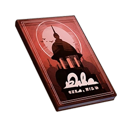

Snezhnaya · Books & Literature
Night Murmurs From the Far Border
Viliana’s one-volume Snezhnayan tale follows hunter Czcibor to a remote manor and a suspected Varcolac. Its abrupt ending treats the creature and a rumor about Lady Evlampiya Orlova as folklore whose truth remains unverified.

Catalog and frame
This one-volume Snezhnayan book is credited to Viliana. Its narrator presents the events as a tale and ends by asking readers to decide whether the Varcolac is legend or an undiscovered truth. That framing makes the book evidence for local folklore and rumor, not proof that every described creature exists as stated.
The story names Czcibor as a hunter raised in a Frostmoon Scions’ encampment. A shared name alone does not prove that this literary Czcibor and any present-day character are the same person.
The hunter and the manor
Czcibor follows blood from a wounded wolf-like beast to an isolated estate. The pale butler and black-haired young master seem suspicious to him, especially after he recalls a priestess’s account of the Varcolac: a fae able to shift between human and beast forms, with two hearts.
During the night, Czcibor finds scars on the sleeping servants and a bone organ. He follows the young master into the snow, where Frostlamp Flowers appear to send light toward the man’s arrow wound. The book leaves Czcibor’s observations inside his limited, increasingly fearful point of view.
The two-heart reveal
Czcibor attacks the young man, who transforms into the beast. After Czcibor stabs him in the heart, the creature says Varcolac are born with two hearts and thanks the hunter for piercing the “extraneous” one. The story reverses the hunter’s assumption: the injury has not killed the creature but completed it.
The text ends at the moment the Varcolac lunges. It does not resolve Czcibor’s fate or provide an independent account of the creature’s biology.
Rumor is not confirmation
The final note says Varcolac are nearly extinct and dismissed by many as myth. It then repeats a rumor that Lady Evlampiya Orlova is a Varcolac, while making clear that the narrator cannot verify the claim and that readers are unlikely to question the Duchess directly.
This is a useful lead into Snezhnaya’s fae and Frostmoon Scions material, but not proof that Lady Orlova is one or that the entire story is a historical report.
This is an original CoreGG reading guide, not an official HoYoverse article or a reproduction of the game text. Source links below identify the records used so you can check the original context.
Sources & references
Check these sources for the original game text and reference trail.